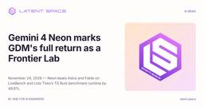

Latent Space
https://latent.space/
Technical conversations, original reporting, and practical guides for the engineers building with AI.
フィード

[AINews] Inside the exploding Coding Data Market
Latent Space
November 27, 2026 — How frontier labs buy training data.
5時間前
Inside the AI Training Data Market — Gabe Greenberg, G2i
Latent Space
A frontier lab can pay more for training data it gets to keep exclusive, or take a discount on data another lab can buy too. At AI Engineer CODE, G2i founder Gabe Greenberg tells swyx how labs make that decision, how small pilot orders turn into bigger...
10時間前

How Clay Builds GTM Agents — Jeff Barg, Head of AI
Latent Space
How $1,500 could qualify every company in the world, why customers hate the model selector, and how Clay is building go-to-market infrastructure for every agent
1日前
The Revolution vs The Renaissance — Thariq Shihipar, OpenAI
Latent Space
AI can make software cheap enough to produce by the thousand and still give you more time to make one thing feel right. At AI Engineer CODE, Thariq Shihipar shows how those two futures can coexist. In his fighting game, he edits the size of a rock in t...
2日前

[AINews] Math Proofs Are Landing Faster Than We Can Read Them
Latent Space
November 25, 2026 — From Erdős problems to new bounds for matrix multiplication and Fourier transforms.
2日前

[AINews] Gemini 4 Neon marks GDM's full return as a Frontier Lab
Latent Space
November 24, 2026 — Neon beats Astra and Fable on LiveBench and cuts Theo’s TS Rust benchmark runtime by 48.6%.
3日前

[AINews] Jensen Is Back! and OpenAI Shows Its Pretraining Curve, joined by Microsoft
Latent Space
November 23, 2026 — Nvidia reinstates its founder, and OpenAI publishes its internal loss curve and proposes a shared training limit.
4日前

The War Against Slop and an Emerging Weapon to Fight it: Formal Verification
Latent Space
Proving software correct with math has traditionally required specialist work. Now AI and Lean are helping automate the process.
7日前

[AINews] Anthropic successfully completes largest IPO in history, valued at $1.5T
Latent Space
November 19, 2026 — ANT went from $83 at pricing to $111.50 at the open and $97.17 at the close. Plus, Google opens Genie 4 to developers.
8日前
Scaling Linear’s GTM to $100M ARR — Cristina Cordova, COO
Latent Space
>50% of tickets written by agents, the AI budgets behind $100M-in-months ARR, and selling without SDRs or FDEs
8日前
Why Linear says Issue Tracking is Dead — Cristina Cordova, COO
Latent Space
Linear was founded to build a better issue tracker. Seven years and $134 million in funding later, its CEO Karri Saarinen published a post titled "Issue tracking is dead." ( https://linear.app/next ) In this episode, we chat with Cristina Cordova ( htt...
8日前
[AINews] Gemini 4 Neon: GDM's Opus/Sol Contender
Latent Space
November 18, 2026 — Google’s middle tier scores 61 on the Intelligence Index. Plus, Anthropic prices its IPO at $83.
9日前
[AINews] GPT-6.2 Astra, the #2 Frontier Model is better and 20%-600% cheaper, but has mixed reviews; 6.2 Sol likely main workhorse
Latent Space
November 17, 2026 — GPT-6.2 Astra and Sol lower benchmark costs. Early testers disagree on what Astra is like to work with.
10日前
Cloudflare Joins the Jevolution and Labels Itself a Neolab
Latent Space
Cloudflare made its name speeding up the web. Now it's building System One models to make decisions and pull data in milliseconds.
11日前
[AINews] Perplexity hits a $1B revenue run rate, up 4x in 2026
Latent Space
November 16, 2026 — Computer gets Teammates, Perplexity ships Monitor API, and a new research lab launches.
11日前
Building Visual Intelligence — Andreas Blattmann & Dustin Podell, Black Forest Labs
Latent Space
Black Forest Labs’ case for learning AGI from pixels, motion and sound.
11日前
[AINews] The No AI Slop Manifesto
Latent Space
November 13, 2026 — AIE speakers unite to lay out how to fight slop.
14日前
[AINews] Jensen Huang resigns after 33 years leading NVIDIA
Latent Space
November 12, 2026 — Colette Kress takes over as interim CEO. What happens to open source/American AI leadership?
15日前
AI Ambition: ArtCraft Cloned Photoshop and Now Wants to "Rebuild Everything"
Latent Space
ArtCraft used AI to rewrite Photoshop as open source software. For CEO Brandon Thomas, the vision is even bigger: to take back the internet!
15日前